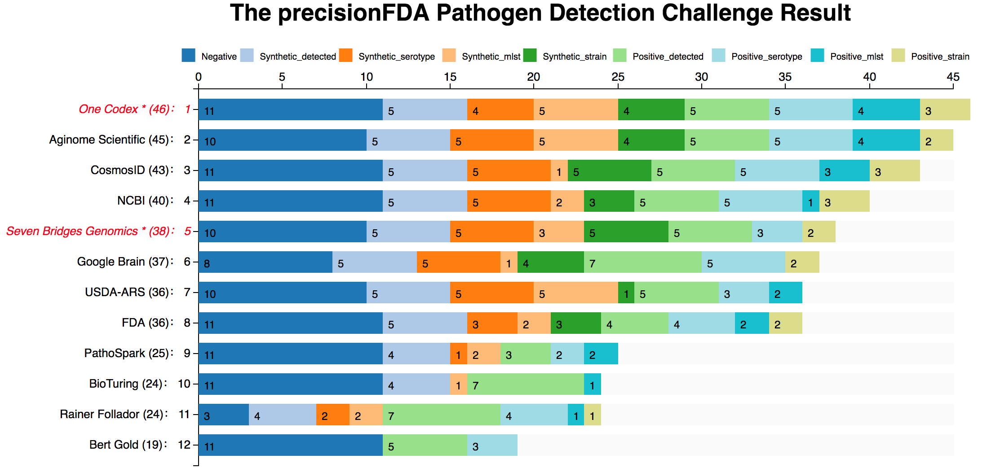

FDA举办食源性病原体检测挑战赛
近期美国食品药品监督局FDA通过在线平台precisionFDA （https://precision.fda.gov）举办了CFSAN Pathogen Detection 挑战赛，目的是在宏基因组测序样本中鉴定出沙门氏菌株的分布和类型。该比赛在今年2月16号-4月19号在precisionFDA平台上举办，后来因未知原因，最后一刻延迟一周，改4.26截止。 最终成绩于近日在FDA网站（https://precision.fda.gov/challenges/2/view/results）上在线公布 。
precisionFDA平台是基因组信息学社区和共享数据平台。通过该平台， FDA提供了一个安全、开放、透明的云平台性质的基因组织，使研究人员和测试人员可以探索NGS方法、为下一代测序诊断提供依据，推动创新并制定必要的标准。该平台为所有开发者提供了统一的、可共享的基因组信息数据库、用于大量测序数据分析流程运行的计算环境，以及与广大的科学界人士共享分析流程和结果的版块。通过实验、数据和工具的共享，协作以及标准的制定，precisionFDA的设立“有助于推动科学的监管、评估基因测试和软件的准确性”。
这一次的CFSAN Pathogen Detection比赛，将目标转向了食源性致病菌的检测，据相关统计报道，在美国每年因食源性致病菌感染人数有4800万，造成住院和死亡人数达到128,000和3,000人，据估计，每年的经济负担累计为1520亿美元， 其中包括因新鲜和加工农产品受到污染而造成390亿美元损失。日前，一篇题为《流感下的北京中年》的文章在微信朋友圈做到了真正意义上的刷屏，作者用日记的方式来记录岳父从流感到肺炎，从门诊到ICU，仅仅29天阴阳两隔的经历。就作者提供的案例而言，北京典型的中产阶层，名牌大学金融硕士，有房有车，现金流可观，但即便如此，遇上了ICU一天2万元的开销，能坚持的时间也就几十天。由此可见提供一种快速有效的临床病原体检测方案尤为重要。
近年来， 新一代测序技术在食源性致病菌全基因组测序 （WGS）中的应用，彻底改变了食品病原体检测方式，传统的检测方法耗时长，分辨率较低，常常无法确定病原体与患病者之间的关系，而宏基因组学（Metagenomics）可直接从环境样品中提取全部微生物的DNA，采用对微生物基因组测序的方法能够在亲源性极相近的菌株间加以区分，为临床诊断、食品安全、生物安全提供参考。
在这一次挑战中，FDA提供了32个宏基因组测序样品，24个作为测试集，8个作为训练集，参与者需要开发和应用生物信息学方法，在FDA提供的24个宏基因组测序样品中鉴定出特定的沙门氏菌类型，评判的标准包括是否能够鉴定出存在的沙门氏菌、沙门氏菌菌株类型、血清型和MLST类型。本次比赛一共有12家机构/个人提交了比赛结果，包括美国食品药品监管局 （FDA），美国国立生物技术信息中心 （NCBI），Google，Y Combinator 旗下创业公司 One Codex以及由新加坡海归创立的厦门极元科技有限公司（Aginome Scientific）等机构。根据公开数据显示，在正常截止时间之前提交的结果中，厦门极元科技综合排名第一，多个单项成绩第一。推迟一周提交的One Codex总分46， 比厦门极元科技多一分。NCBI、Google和FDA排名相对靠后。下图是这次比赛成绩的总结，标红为于原截止日期之后提交结果的机构包括One Codex和Seven Bridges Genomics：

距上次FDA Hidden Treasures挑战赛的热身赛取得好成绩之后，厦门极元科技在微生物高通量测序病原体的检测方面再次取得总分第二的好成绩，此次比赛有助于为临床病原体的快速鉴定提供可行方案，包括各种常见的沙门菌 (Salmonella)、李斯特菌 (Listeria)、大肠埃希菌 (O157:H7)、弯曲菌 (Campylobacter)、弧菌 (Vibrio)、阪崎肠杆菌 (C. sakazakii) 以及新兴病原体的检测。